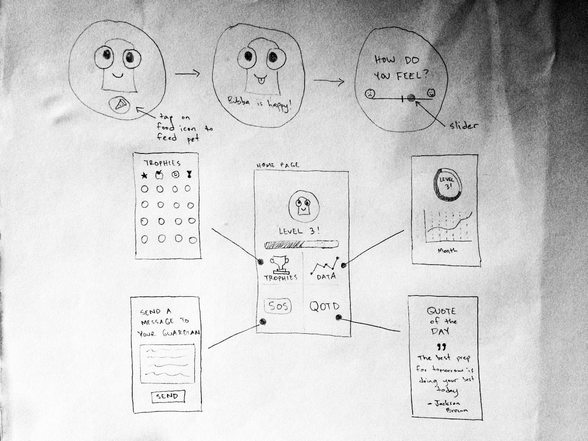

Bubba: The Happy Buddy
An Android Wear app that encourages teenagers with eating disorders to maintain healthy eating habits through positive reinforcement and non-intrusive techniques.
An Android Wear app that encourages teenagers with eating disorders to maintain healthy eating habits through positive reinforcement and non-intrusive techniques.
For our final project in CS160: User Interface Design and Development, teams were challenged to design novel smartphone and smartwatch applications focused on healthcare and medical treatment. The finals projects were publicly showcased at the end of the semester for the rest of the UC Berkeley community.
One of our team members has a close friend currently battling anorexia and bulimia and he always wished he could provide her with a solution she hasn’t already explored. After conducting a competitive analysis to see how others approached this problem, and to learn from the design intricacies and implementations, our unique value proposition offered two very specific and effective support systems for the user: a virtual pet and a person close to the main user. By doing so, we are able to provide a system for the user to record and track his progress, understand the effects that his or her habits will have on another being, and be monitored by a caring individual close to the main user, all in a non-intrusive, fun and friendly environment.
We established 6 major design specifications that were necessary to tackle the problem.
1. The pet should be on the watch, since the watch is more accessible and convenient for the user to quickly interact with. After eating, the app also asks the user how they feel (implied to be about eating since it follows immediately after, but we chose to not make explicit to avoid shame that is often associated with eating for people with eating disorders)
2. A slider will be incorporated (instead of numbers/other quantitative measurements that may be reminiscent of weight or other numerical measurements of one’s body) that immediately takes their answer after they’ve touched the slider and released, since being as quick and non-intrusive as possible is a high priority for our application.
3. On the phone, after logging in (necessary to link child with parent/guardian who will receive notifications and updates on their progress), the user’s level is prominently displayed. We chose to measure the user’s progress with levels because these are cumulative, so every bit of effort made counts and is positively reinforced (this is why decided against streaks, which are stressful to lose and demotivating if lost).
4. Include achievements to track their progress as well as to celebrate specific goals (gamification of the application).
5. There is a need for the quote of the day, which is meant to be a positive reminder, just to bring a little more positivity into the user’s life.
6. The SOS feature is meant to be a non-stressful, shameless way for the user to reach out for help, which is not always easy for disorders where shame and control are important factors. The SOS button allows the user to still seem in control.
From our design specifications we had the opportunity to meet with three individuals: a high school counselor who suffered from anorexia as a teenager, a dietician at the UC Berkeley Tang Center, and a high school senior diagnosed with bulimia and anorexia earlier in her teens. We gathered valuable information about the everyday experiences and mindset of our target users that could be used to tailor the interactions for our app.
Some of the insights we gathered are as follows:
1. Everything about eating disorders have to do with self control. Starving was an exercise in control and that feeling of being in control motivates the person to continue the habit. For example, a person could make a single cracker last for an hour. From this, we realized our application can’t just track individual meals because the meal might not be a full meal or it might be spread out over a period of time.
2. While eating disorders share a lot of similarity with other addictions (i.e. drugs, alcohol), it is harder to deal with because it cannot simply be given up as food is a necessity.
3. Victims of these eating disorders never like to accept that they have it, nor like to discuss it, which makes the process of recovery far more challenging.
Low Fidelity mockups were designed on a collaborative prototyping tool called Figma. As the Lead Designer/Prototyper, my main role was to design the app's UI and the ambiguous pet who we chose to name Bubba. Bubba has cat-like whiskers and dog-like ears to remove any possible pet bias. Bubba was sketched on paper, then layered over using the pen tool.
After receiving some feedback, we created another design iteration, where we decided to include more screens for different awards to indicate the style with which we would present them. At the top of the main activity, we made the Bubba icon look more like a button, so that it would be intuitive for the user (this icon opens the application on the watch, if for some reason it is closed). We also displayed a new settings menu, and took the SOS button from the top left of the main activity and placed it there, since it doesn’t need to be so prominent. We replaced the original SOS button with a Question Mark icon to indicate a “tutorial” on-boarding, if the user gets lost in functionality.
Through our feedback, we also established the top 3 user needs: eating ecouragement (positive reinforcement), track feelings (control), and alert parent/doctor (control).
We redesigned our mocks based on this feedback to produce our high fidelity final designs.

Our application’s greatest value is in its niche audience. There already exist many apps for food tracking, but Bubba is targeted specifically for young teens with eating disorders, so a cute, friendly and fun app is a perfect fit. Our application also stands out in that it is sensitive and non-intrusive. Notifications regarding missing meals are phrased gently: “Did you remember to feed Bubba?” not: “Did you skip a meal?”
There is also an SOS option (hidden in the menu) that allows the user to remain in control (and not be shamed) if they do need help, as it sends a quick text to the linked parent. All of these special features — plus the core functionality of the app that has a fun, gamified system for encouraging healthy eating habits — provide value for the users as they battle their eating disorders.